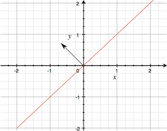
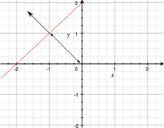
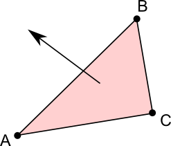

A plane is an infinitely large, flat surface that exists in 3D space and divides the space into two halves known as half-spaces. It is easy to determine which of the two half-spaces a particular point is in and also how far the point is from the plane. Walls, floors and other flat surfaces are common in games, so a plane is sometimes useful for mathematical calculations with these objects. Also, there are cases where a real surface does not exist but it is useful to imagine that one is there. For example, in sports, a goal line or out-of-bounds line is often assumed to extend into the air, effectively defining a plane.
When a plane passes through the <0,0,0> point in world space, it is defined simply by a normal vector that determines which way it faces. It is easy to visualise this if you imagine looking at the plane edge-on.

Note that the side from which the normal vector points is important since it is used to identify which half-space a point is in (ie, on the positive or "normal" side of the plane or the other side). When the plane doesn't pass through <0,0,0> it can be defined by the normal vector along with a distance from <0,0,0>

A plane can also be defined by the three corner points of a triangle that lies within the plane. In this case, the normal vector points toward you if the corner points go around clockwise as you look at the triangle face-on.
.